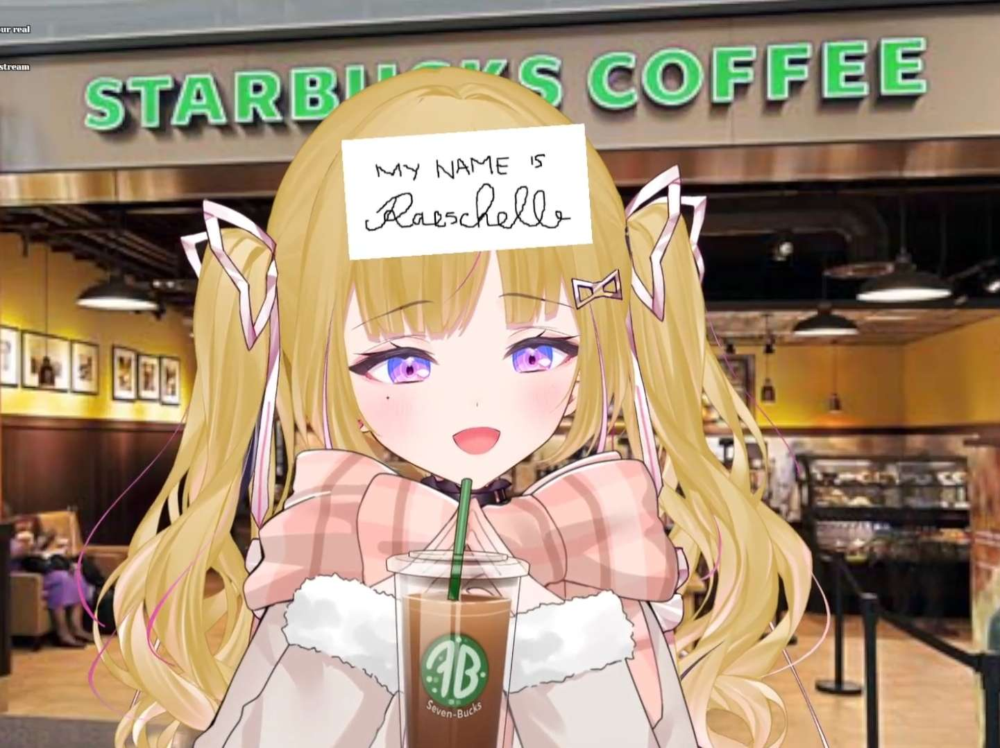

Himemiya Rie
If we were at group therapy together we would
not get any better but it would be nice
Introduction Video
Profile
A princess from the Kingdom of Regalia
that hails from the Phase World. She knows
little of the outside world, having been sheltered
by her parents from everything since childhood. That is,
until a certain Nephilim appears in her dreams, offering
to break her out and take her along onher adventures... for a price.
With nothing to lose, she begins her journey to Earth with the others by her side.
Personality
From the basis, Rie acts as a royal person and treats her fans like her subjects
Despite she regularly claims being as seiso as her Phase-Connect genmates,
it is not rare to take Rie shocking her viewers with disturbing ideas
and doubtful actions. In these cases, she trivializes her behavior to make an excuse.
History
Background
Her YouTube channel was created on 6 February 2022, her Twitter account was created in December 2021.
On 18 June 2022, during Phase-Connect's one year anniversary, they announced their new Generation labeled as "PhaseALIAS".
On 24 June 2022, Phase-Connect revealed PhaseALIAS's members and their debut schedule.
After the announcement, Rie made her first tweet and uploaded her first video on YouTube channel.
On 7 July 2022, she announced her debut schedule. Rie debuted on 10 July 2022.
2022
On 11 July, Rie released her first solo cover song HIBANA by DECO*27.
On 5 August, she celebrated monetization on YouTube channel and also enabled Super Chat feature.
On 20 August, she reached 10,000 subscribers on YouTube channel.
On 24 September, she opened her channel membership feature.
2023
On 2 March, Rie reached 20,000 subscribers on her YouTube channel.
On 23 June, Rie debuted her 3D chibi model, she also reached 30,000 subscribers during the stream.
On 24 June, Rie released her first original song Requiem.
Mascot and Fans
Her best (and only) friend is a pink unknown species named "Pafu." He looks like a pink fluffy cloud with 2 ears, a tail, two white eyes.
Her fanbase is called "Himebito."
Her members have 3 tiers consisting of "Himebito," "Himeknight," and "Himenoble."
Trivia
Lore
The Nephilim who appeared
and brought her to this world was her genmate Remilia Nephys
Likes and dislikes
Likes:
- Address her as Hime-tan
- Cake.
- Thighs.
- Shopping.
Dislikes:
- Be bullied (mild bullying is ok).
- People not paying their taxes.
Miscellaneous
Her first name is written in kanji, "Hime"「姫 」means "Princess," and when you combine "Miya"「宮」with "Tono" it becomes "Kyuden"「宮殿」which means "Palace."
Her codename is "Royal."
She can speak: English, Japanese, Korean, Spanish, Mandarin, Chinese, Cantonese, and she would like to learn more.
Her goals are:
- Himefy the world
- Learn to sing the songs that she played during debut stream
- One ban per day >:3c
- Try to say "I love you" without cringing
- Field trip with all phase's members
- Embezzle more funds from HQ.
Her birthday is 520 (20 May), in china it represents "I love you",
because "五二零" (520) in chinese is pronounced almost like "我爱你" (I love you).
Rie shares her illustrator with Hoshikawa Sara.
The electric guitar she played during her debut stream was "PRS SE 245" (Paul Reed Smith Student Edition).
Random Hime Pictures


Disclaimer: This website is a mimic version of Virtual Youtubeer Wiki website for a school project.